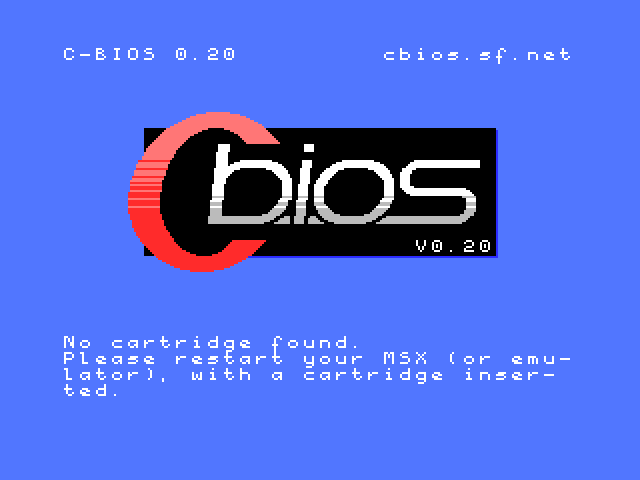

The easiest way to install openMSX is to use a ready-made package. Whether or not one is available depends on your operating system:
.zip file, and double-click on the
resulting .msi file. After this, you should have a working openMSX
and openMSX Catapult..dmg file from our website (check the Download
box). There is no Catapult for macOS, but Catapult isn't adding much value
anyway nowadays, as there is a built-in GUI now. openmsx,
openmsx-data, cbios and openmsx-catapult
packages. The simplest way is to run apt install
openmsx-catapult, APT will install the other needed packages as well.
/etc/apt/sources.list.
yum install
openmsx to install openMSX.Note that in any case, no system ROMs are ever installed, so only the C-BIOS machines work out-of-the-box. See also the next couple of questions.
If you still think openMSX is difficult to install, please tell us why!
We strongly recommend to use the installer. It contains a straightforward Windows Installer package. With the installer, your openMSX experience is only about 3 clicks away. The Zip file is meant for experienced users and those familiar with openMSX and emulators in general.
The zip file may suggest that it is a "portable" version of the emulator, but it isn't. It's exactly the same thing, just not packaged in the installer. The zip file still assumes the same paths as described in the Setup Guide.
The MSX system ROMs are copyrighted. In other words: it's illegal to include them in our software package without a license. The Setup Guide contains a section about system ROMs.
System ROMs should be put in share/systemroms. Please see
the Setup Guide for the
exact location for your operating system.
The quickest way to see where openMSX is searching for system ROMs on your installation is via the GUI under . At the bottom of this dialog you can find buttons to quickly open a (native) file browser on the locations where the ROMs are searched for, both for the user folder and the system-wide folder. We recommend to use the user folder, so that your system-wide folder only contains the files that come with the openMSX installation.
You may also see errors like "Error compiling shader".
You are probably mixing two installations of openMSX. Make sure that your
openMSX user directory (see this overview where it is for your platform)
does not have any openMSX installation stuff, only your own files, like system
ROMs and whatnot. Make sure no other folders (like
share/shaders or share/scripts) are there, as they may
interfere with the files that we ship with openMSX.
We sure hope so, especially with the built-in GUI nowadays. Still encountering problems using openMSX? We'd love to hear about it.
Although the GUI is quite comprehensive, it doesn't give you access to all features of openMSX. Get access to all the features by using the openMSX built-in console, and find out in the User's Manual how this works. It's not a GUI, but we still did our best to make this console as easy to use as possible.
If you think openMSX is not easy to use, please tell us why! Contact info is in the manuals.
Oh, you might wonder: why isn't the GUI looking more like other applications of my operating system, like with (most) other emulators? We chose this GUI toolkit, because it's independent of the operating system and it is easily integrated into our code. This way we can support more operating systems with the same amount of work (and developers) and make it easy for us to add new features for everyone.
You are probably talking about this:

openMSX doesn't come with any system ROMs, see Why doesn't openMSX come with system ROMs?. To have something to be able to run some software, openMSX comes with a free replacement of an MSX BIOS ROM called C-BIOS, written by BouKiChi, Reikan and nowadays the C-BIOS Association. This is also what you can see in the screen: C-BIOS 0.25.
The message, in other words, does not come from openMSX, but rather from C-BIOS, an MSX program which tries to start a cartridge that is inserted in the MSX that is being emulated by openMSX. And it seems you didn't insert any cartridge for it... So, either run openMSX with a ROM image or install real MSX system ROMs for a particular machine and run that one.
Note that the current version of C-BIOS can only run cartridges and does not support disk or tape usage. More information can be found in the Setup Guide.
You are probably using Catapult with C-BIOS and you're trying to run a program on a disk image.
Unfortunately, the C-BIOS machines that come with openMSX do not support disk or tape usage. Please see the Setup Guide.
The tricky thing is that Catapult always shows the disk, tape and cartridge controls, ignoring if the machine you're emulating actually supports them. However, the built in GUI menus show exactly what you can do with the currently running MSX: it only shows options to insert a disk drive if there is actually a disk drive present on the system. Please give it a try! It's the future of openMSX!
Until C-BIOS supports disks or tapes, you will have to install the system ROMs of a real MSX (one with a disk drive!) and emulate that machine. More about this in the Setup Guide.
You are probably running the C-BIOS machines that came with openMSX and did not install any system ROMs of other machines (or did not choose to emulate another machine). The C-BIOS machines rely on the freely available C-BIOS ROMs and that's why we can ship them with openMSX. However, C-BIOS only supports ROM images for now. More information about that in the C-BIOS section of the Setup Guide.
If you want to run software from other media (disks, tapes, etc.), you will have to install other system ROMs, originating from real, existing MSX machines. Then you can run MSX machines other than the C-BIOS machines, and which do support tape and/or disk software (depending on the emulated MSX model). More about this in the Setup Guide.
You've been playing a game and want to continue another time, so you want to save your progress. You can either save your game as you would on a real MSX, or you can use the built in save state mechanism, which is explained in the manual.
If you consider that cheating, or are interested in how you could save your game on a real MSX, read on... How it works, depends on the game:
pac or
fmpac extension when you start openMSX..pac file from "persistent/fmpac/untitled1" in your
openMSX user directory (see this overview where it is for your platform)
to a safe location.
Many people wonder how to save in Metal Gear. Here we will explain how that is done on a real MSX, which is also the way to go about it if you don't want to use the built in save state mechanism of openMSX.
Metal Gear has two ways of saving games:
my_save_game.wav.my_save_game.wav cassette
image file, under the name you just entered.Note that saving in this way is only useful after reaching the elevator. You will continue in the last elevator you were in.
filename.dsk.For loading back your game:
This is explained in the User's Manual.
You need to switch the video source of the emulated monitor to show the GFX9000 image.
For details, please see the corresponding section in the User's Manual.
Use the GUI menu: and uncheck "Show OSD icons". You can use this window also to configure them to your liking.
The full list of commands and settings that are available in the console can be found in the Console Command Reference. Check it out, it's really useful!
There is also a full alphabetical list of settings in the GUI under Settings → Advanced. This is a very long list though, and we might remove it later as it is not very easy to use.
Actually, openMSX is quite fast, depending on what you ask it to do. If you have minimal hardware, you should use minimal settings as well, to get decent speed. This was proven by Karloch who ran openMSX 0.6.0 on a 206MHz HP Jornada 720, see this thread on MRC. On PCs, it really helps if your graphics card (or actually, the pipe between the CPU and the graphics card) is not slow. Tips on how to performance tune openMSX can be found in the Setup Guide. The developers do their best to keep the performance of openMSX as good as possible, while still achieving the highest possible level of accuracy.
People often wonder why you would need 200MHz+ machines to emulate computers based on 3.5MHz CPUs. The thing is, there's not only the CPU you have to emulate, you also have to emulate the VDP (21MHz), the monitor (writing at least 50 times per second at least 256×192 pixels to a window), the sound chips, etc. This is relatively simple hardware, but having that run in software with clock cycle accuracy is quite heavy. In general, it is a lot of work for a general purpose CPU to emulate functionality that was originally made in dedicated hardware. Rebuilding an MSX in general purpose hardware (using VHDL on FPGA) is already a lot less demanding. An example of this is the One Chip MSX.
The trick is to use the reverse feature to correct any mistakes you make during game play. You just play, play, play, correcting all mistakes you make by going back in time a bit (using PageUp) when you (e.g.) die and doing it better.
As soon as you get to the end of the game, we recommend to save the whole replay with , so that you can always load it and play it again (using ).
Next step is to pause openMSX, load back the replay (if you saved it) or
simply go back to the complete start (click at the start of the reverse bar, or
use the command reverse
goto 0). Now you're ready to record your heroic movie! (Note: if you
want to record a video from a later point in time, just let it play until it
reaches the right position, or click on another part of the reverse bar, or
just search a bit with PageUp/PageDown.)
As a final step, start recording and unpause openMSX. If you want the video quickly, run in full throttle (F9 by default) to speed things up. The resulting movie will be the same. If you want to split up the recorded video in chunks of under 15 minutes that are accepted by YouTube on unverified channels, you'll probably want to have a look at the record_chunks command.
Easy! Now fill up YouTube with MSX material!
If just creating perfect play videos isn't enough for you, you are probably going for Tool-Assisted Speedruns - more information on tasvideos.org. The rest of this item gives you some hints to help you with this.
First of all, the basics are explained in the previous section, of course.
But you can get extra tools if you enable the TAS mode, we're just not going to repeat the
explanation here.
If you need also a live RAM watch, check out the ram_watch command. It enables you to add
live views of values on multiple addresses with several view options, like
titles, formats and data types. Please also try the similar functionality under , which is even more powerful.
For MSX TASing, we recommend to not use the (default) C-BIOS based machines, but real machines, because C-BIOS is still in development and this means your replay (called "movie" in most other TASing emulators) won't be easy to get working again once a new version of C-BIOS has been released. Also, MSX turboR machines are not recommended, because their emulation has a relatively large amount of timing inaccuracies. So which machines do we recommend? Here's a table with some very rough directions:
| game type | machine |
|---|---|
| Japanese/Korean (MSX/MSX2/MSX2+) | Panasonic FS-A1WSX |
| European (MSX/MSX2) | Philips NMS 8250 + FMPAC |
This is mostly motivated by the fact that Japanese machines run at 60Hz interrupt frequency and the Japanese games are made for that. Besides, you will get proper Japanese characters with a Japanese machine, which are often used in such games. The mentioned machine can run practically all Japanese MSX/MSX2/MSX2+ games and has FM on board. For European games, the 50Hz (PAL) Philips NMS 8250 is recommended, just because it's very common and runs most European MSX and MSX2 software. The FMPAC extension is for better sound. There are no native European MSX2+ machines.
When doing MSX TASing, be aware that (unlike consoles), MSX machines have
a full keyboard attached, and touching the keyboard provides input to the MSX, which in turn
means you will interrupt the replay if it's playing. You can avoid this (when
merely viewing a replay) by using the -viewonly option when using
the reverse loadreplay
command. The keyboard problem also means that it's a bit tricky to assign
keyboard shortcuts (with the bind command) to (e.g. TAS) functions,
without also blocking MSX keys. So, be careful which keyboard shortcuts you
configure and which keys you press.
Now it's time to make a TAS and submit your entry on tasvideos.org!
A final note: if you have problems replaying other people's TAS (or other
openMSX replays), because openMSX can't find the required media (ROMs, disks,
tapes, etc.), make sure you put the required media in the proper filepool; by default
share/software.
Using reverse in combination with large (hard disk or SD card) media can be slow at start-up, as openMSX needs to calculate a hash of the media to know whether it changed. Moreover, if you reverse and the hard disk image changed, openMSX will switch to read-only mode for the media. This is because currently, when reversing, openMSX does not revert changes to media, so replaying these may cause corruption on the media e.g. due to double writes.
In other words, if you are using large media and you don't really need the reverse feature, you probably want to disable it: use the checkbox. And if you don't want it to restart again anymore, uncheck .
Perhaps you don't want to disable reverse necessarily, but you're working with the mouse a lot and the reverse bar shown on the screen is getting in the way. In such a case you can get rid of the bar by toggling the setting using . Alternatively, if you still want to see it, but not in the area where the MSX display is shown, you can move it out of the main window by right-clicking the bar, unchecking "Hide title", checking "Allow move" and then drag the whole bar out of the main window.
More details about reverse are in the User's Manual.
The ZMBV (Zip Motion Blocks Video) codec is used, which has been developed in the DosBox project. It enables openMSX to encode video in real time (on most systems), has a very good compression ratio and gives excellent video quality, because it is a lossless codec. Razor sharp movies! Also, because the encoder is built in, it doesn't make openMSX depend on an external codec to be installed for recording video.
A developer of DosBox built a Win32 binary of the codec for our users. It is
included with openMSX 0.6.2 (and up) for Win32. Note that the installer does
not install the codec by default, so you will need to enable this option when
installing. You can also download the codec
separately from our web site. After unzipping the file, use the .INF file
to install the codec (zmbv.dll) by right-clicking on it and
selecting Install. Note that other binaries of this codec that you can find on
the internet may not work, as not all of them have support for more than 8 bits
per pixel recordings.
Also note that this is a 32-bit codec, so it will not run inside 64-bit Windows
Media Player or Windows Media Center.
You only need this codec installer to be able to replay the videos on a Windows
system. (Although a workaround could be to upload it to YouTube, where it
is re-encoded into a lossy MPEG-4 format.) Programs like Virtual Dub can use
the codec and re-encode it in another way. On other operating systems, you can
use any video player which supports this codec; e.g. mplayer.
Re-encoding can be done with e.g. mencoder.
Not sure, but for some reason, especially on Windows, we can't find default settings that work for everyone. If you indeed have glitches like sound delay or stuttering, you can try the following.
samples setting. If you have
stutters, double it and see if that helps. If you have delays, halve it and
see if that helps.Next to the openMSX manuals (which include documentation on how you can control openMSX from an external application, so that you can make your own GUI, launcher or debugger), also check out the doc directory of your openMSX distribution.
This has the same cause and solution as Why do I only get a black screen?.
You can look in the following places for answers:
libera.chat and join channel #openMSX. It is possible you will not get a reaction immediately, so please ask your question, stay logged in and check from time to time if someone is active.